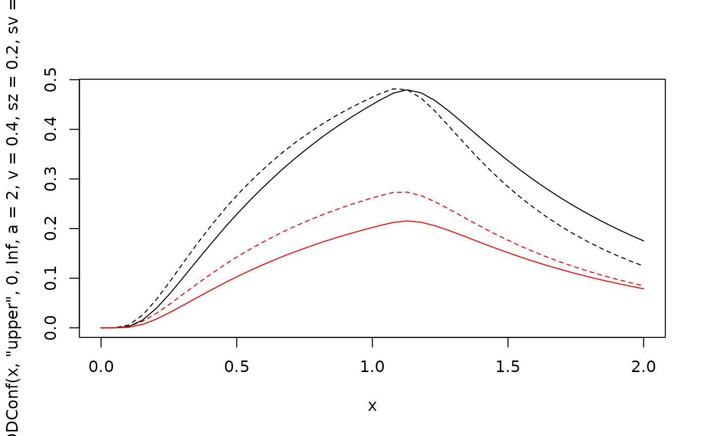
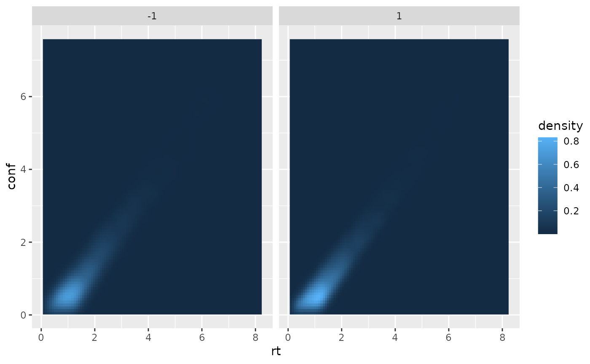
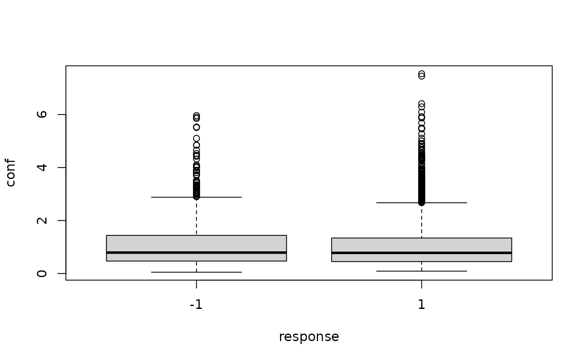

Likelihood function and random number generator for the Drift Diffusion Model
with confidence computed as decision time. It includes following parameters:
DDM parameters: a (threshold separation), z
(starting point; relative), v (drift rate), t0 (non-decision time/
response time constant), d (differences in speed of response execution),
sv (inter-trial-variability of drift), st0 (inter-trial-variability
of non-decision components), sz (inter-trial-variability of relative
starting point), s (diffusion constant).
Usage
dDDConf(rt, response = "upper", th1, th2, a, v, t0 = 0, z = 0.5, d = 0,
sz = 0, sv = 0, st0 = 1, s = 1, precision = 3,
z_absolute = FALSE, stop_on_error = TRUE, stop_on_zero = FALSE,
st0stepsize = 0.001)
rDDConf(n, a, v, t0 = 0, z = 0.5, d = 0, sz = 0, sv = 0, st0 = 2,
s = 1, delta = 0.01, maxrt = 15, z_absolute = FALSE,
stop_on_error = TRUE)Arguments
- rt
a vector of RTs. Or for convenience also a
data.framewith columnsrtandresponse.- response
character vector, indicating the decision, i.e. which boundary was met first. Possible values are
c("upper", "lower")(possibly abbreviated) and"upper"being the default. Alternatively, a numeric vector with values 1=lower and 2=upper or -1=lower and 1=upper, respectively. For convenience,responseis converted viaas.numericalso allowing factors. Ignored if the first argument is adata.frame.- th1
together with
th2: scalars or numerical vectors giving the lower and upper bound of the interval, in which the accumulator should end at the time of the confidence judgment (i.e. at timert+tau). Only values withth2>=th1are accepted.- th2
(see
th1)- a
threshold separation. Amount of information that is considered for a decision. Large values indicate a conservative decisional style. Typical range: 0.5 <
a< 2- v
drift rate. Average slope of the information accumulation process. The drift gives information about the speed and direction of the accumulation of information. Large (absolute) values of drift indicate a good performance. If received information supports the response linked to the upper threshold the sign will be positive and vice versa. Typical range: -5 <
v< 5- t0
non-decision time or response time constant (in seconds). Lower bound for the duration of all non-decisional processes (encoding and response execution). Typical range: 0.1 <
t0< 0.5. Default is 0.- z
(by default relative) starting point. Indicator of an a priori bias in decision making. When the relative starting point
zdeviates from0.5, the amount of information necessary for a decision differs between response alternatives. Default is0.5(i.e., no bias).- d
differences in speed of response execution (in seconds). Positive values indicate that response execution is faster for responses linked to the upper threshold than for responses linked to the lower threshold. Typical range: -0.1 <
d< 0.1. Default is 0.- sz
inter-trial-variability of starting point. Range of a uniform distribution with mean
zdescribing the distribution of actual starting points from specific trials. Values different from 0 can predict fast errors (but can slow computation considerably). Typical range: 0 <sz< 0.2. Default is 0. (Given in relative range i.e. bounded by 2*min(z, 1-z))- sv
inter-trial-variability of drift rate. Standard deviation of a normal distribution with mean
vdescribing the distribution of actual drift rates from specific trials. Values different from 0 can predict slow errors. Typical range: 0 <sv< 2. Default is 0.- st0
inter-trial-variability of non-decisional components. Range of a uniform distribution with mean
t0 + st0/2describing the distribution of actualt0values across trials. Accounts for response times belowt0. Reduces skew of predicted RT distributions. Values different from 0 can slow computation considerably. Typical range: 0 <st0< 0.2. Default is 0.- s
diffusion constant. Standard deviation of the random noise of the diffusion process (i.e., within-trial variability), scales
a,v,sv, andth's. Needs to be fixed to a constant in most applications. Default is 1. Note that the default used by Ratcliff and in other applications is often 0.1.- precision
numericalscalar value. Precision of calculation. Corresponds to the stepsize of integration w.r.t.z. Default is 1e-5.- z_absolute
logical. Determines whether
zis treated as absolute start point (TRUE) or relative (FALSE; default) toa.- stop_on_error
Should the diffusion functions return 0 if the parameters values are outside the allowed range (=
FALSE) or produce an error in this case (=TRUE).- stop_on_zero
Should the computation of densities stop as soon as a density value of 0 occurs. This may save a lot of time if the function is used for a likelihood function. Default:
FALSE- st0stepsize
numerical scalar value. Stepsize for integration over
t0.- n
integer. The number of samples generated.
- delta
numeric. Discretization step size for simulations in the stochastic process
- maxrt
numeric. Maximum decision time returned. If the simulation of the stochastic process exceeds a decision time of
maxrt, theresponsewill be set to 0 and themaxrtwill be returned asrt.
Value
dDDConf gives the density/likelihood/probability of the diffusion process
producing a decision of response at time rt and a confidence
judgment corresponding to the interval [ th1, th2].
The value will be a numeric vector of the same length as rt.
rDDConf returns a data.frame with three columns and n rows. Column names are rt (response
time), response (-1 (lower) or 1 (upper), indicating which bound was hit),
conf for the decision time (without non-decision time component; not discretized!).
The distribution parameters (as well as response, th1
and th2) are recycled to the length of the result. In other words, the functions
are completely vectorized for all parameters and even the response boundary.
Details
For the confidence part: th1 and th2 (lower and upper
thresholds for decision time interval).
Note that the parameterization or defaults of non-decision time variability
st0 and diffusion constant s differ from what is often found in the
literature.
The Ratcliff diffusion model (Ratcliff and McKoon, 2008) is a mathematical model for two-choice discrimination tasks. It is based on the assumption that information is accumulated continuously until one of two decision thresholds is hit. For introduction see Ratcliff and McKoon (2008).
This model incorporates the idea, that the decision time T is informative for
stimulus difficulty and thus confidence is computed as a monotone function
of \(\frac{1}{\sqrt{T}}\). In this implementation, confidence is the decision
time, directly. Here, we use an interval, given by th1
and th2, assuming that the data is given with discrete judgments and
pre-processed, s.t. these discrete ratings are translated to the respective intervals.
All functions are fully vectorized across all parameters as well as the response to
match the length or rt (i.e., the output is always of length equal to rt).
This allows for trial wise parameters for each model parameter.
For convenience, the function allows that the first argument is a data.frame
containing the information of the first and second argument in two columns (i.e.,
rt and response). Other columns (as well as passing response
separately argument) will be ignored.
Note
The parameterization of the non-decisional components, t0 and st0,
differs from the parameterization sometimes used in the literature.
In the present case t0 is the lower bound of the uniform distribution of length
st0, but not its midpoint. The parameterization employed here is in line
with the functions in the rtdists package.
The default diffusion constant s is 1 and not 0.1 as in most applications of
Roger Ratcliff and others. Usually s is not specified as the other parameters:
a, v, and sv, may be scaled to produce the same distributions
(as is done in the code).
The function code is basically an extension of the ddiffusion function from the
package rtdists for the Ratcliff diffusion model.
References
Ratcliff, R., & McKoon, G. (2008). The diffusion decision model: Theory and data for two-choice decision tasks. Neural Computation, 20(4), 873-922.
Hellmann, S., Zehetleitner, M., & Rausch, M. (2023). Simultaneous modeling of choice, confidence and response time in visual perception. Psychological Review 2023 Mar 13. doi: 10.1037/rev0000411. Epub ahead of print. PMID: 36913292.
Author
For the original rtdists package: Underlying C code by Jochen Voss and Andreas Voss. Porting and R wrapping by Matthew Gretton, Andrew Heathcote, Scott Brown, and Henrik Singmann. qdiffusion by Henrik Singmann. For the dDDConf function the C code was extended by Sebastian Hellmann.
Examples
# Plot rt distribution ignoring confidence
curve(dDDConf(x, "upper", 0, Inf, a=2, v=0.4, sz=0.2, sv=0.9), xlim=c(0, 2), lty=2, n=40)
curve(dDDConf(x, "lower", 0, Inf, a=2, v=0.4, sz=0.2, sv=0.9), col="red", lty=2, add=TRUE, n=40)
curve(dDDConf(x, "upper", 0, Inf, a=2, v=0.4),add=TRUE, n=40)
curve(dDDConf(x, "lower", 0, Inf, a=2, v=0.4), col="red", add=TRUE, n=40)

# Generate a random sample
dfu <- rDDConf(5000, a=2,v=0.5,t0=0,z=0.5,d=0,sz=0,sv=0, st0=1, s=1)
# Same RT distribution but upper and lower responses changed
dfl <- rDDConf(50, a=2,v=-0.5,t0=0,z=0.5,d=0,sz=0,sv=0, st0=1, s=1)
head(dfu)
#> rt response conf
#> 1 1.5166842 1 1.33
#> 2 0.6031652 1 0.56
#> 3 1.0752079 1 0.69
#> 4 2.0503253 1 1.64
#> 5 1.3644093 1 0.84
#> 6 1.5319564 1 1.24
dDDConf(dfu, th1=0.5, th2=2.5, a=2, v=.5, st0=1)[1:5]
#> [1] 0.34988565 0.06223144 0.26068502 0.16995220 0.33251604
# Scaling diffusion parameters leads do same density values
s <- 2
dDDConf(dfu, th1=0.5, th2=2.5, a=2*s, v=.5*s, s=2, st0=1)[1:5]
#> [1] 0.34988565 0.06223144 0.26068502 0.16995220 0.33251604
if (requireNamespace("ggplot2", quietly = TRUE)) {
require(ggplot2)
ggplot(dfu, aes(x=rt, y=conf))+
stat_density_2d(aes(fill = after_stat(density)), geom = "raster", contour = FALSE) +
facet_wrap(~response)
}

boxplot(conf~response, data=dfu)

# Restricting to specific confidence region
dfu <- dfu[dfu$conf >0 & dfu$conf <1,]
dDDConf(dfu, th1=0, th2=1, a=2, v=0.5, st0=1)[1:5]
#> [1] 0.3114088 0.4857704 0.3303115 0.3857341 0.4030691
# If lower confidence threshold is higher than the upper, the function throws an error,
# except when stop_on_error is FALSE
dDDConf(dfu[1:5,], th1=1, th2=0, a=2, v=0.5, stop_on_error = FALSE)
#> error: invalid parameter combination th1 = 1, th2 = 0
#> [1] 0 0 0 0 0